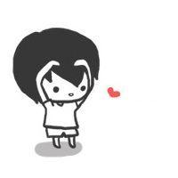

About me
我是吴智栋，现在是河北师范大学软件工程专业的大一学生，到大学算是正式接触计算机，在之前只是单纯的玩游戏，对其他的东西一无所知，正式接触之后发现它是那么的复杂，不过当自己亲自敲出一段代码，运行成功时，特别有成就感，慢慢的喜欢上了这个专业。
从小到大一直是一个听家长话的孩子，学习成绩也是中等靠上，没有经历过什么事情，在高考成绩出来时自己才感到恐惧，不知道自己能去哪里，在报志愿的时候，怎么说也要自己来，因为自己以后都可能因为这几天而被决定，没有听父母的，去当老师或者当医生，最后学习软件！
其实在来师大之前我是不想来师大的，因为师大一直给我的印象就是师范大学，不过自己的专业是软件我觉得好了很多，开学那一天到学校北门，我发现师大外面很漂亮，进去之后学校的建设是很不错的，在这里遇到了我的舍友，死党，越来越觉得自己来对了地方。很幸运遇到了这群人！
高中的时候，在马上要进入高三的时候，我给班里一个女生表白了，然后他还同意了，于是我经历了一段不太刻苦的高三，并没有全身心的投入学习，同样原本成绩特别好的她，也差点被我拉下去，最后他去了济大，我来了师大，到现在已经是在一起两年多了，异地一年。我觉得坚持过去一起都会好起来的，加油！
姓名：吴智栋
出生日期：1999-07-18
专业:软件工程
学校：河北师范大学
喜欢的游戏：英雄联盟、QQ飞车
喜欢的运动：乒乓球、羽毛球
